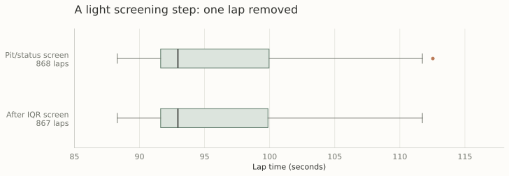
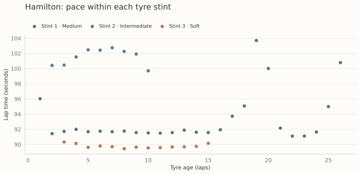
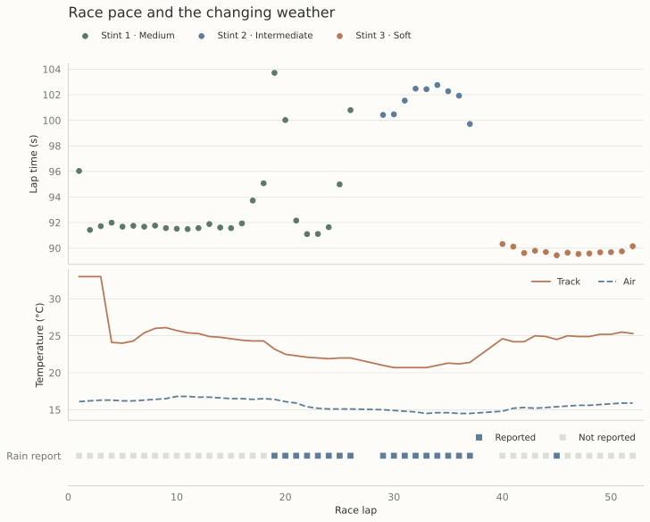

Formula 1 has always seemed like the final destination for someone who loves cars. Growing up, I binged the entirety of Top Gear’s Jeremy Clarkson, Richard Hammond, and James May era with my father. Spellbound by the automotive world, he took me to far-flung hypercar dealerships where I could get up close to what I believed, at the time, was the only reason people worked jobs. To me, sports cars were the ultimate achievement for anyone, anywhere.
Even though I had the same blindly materialistic, car-oriented mindset as a man in a midlife crisis (admittedly, some of this still lingers today), F1 never really appealed to me. This project is my attempt to engage with F1 so that I can tell people I still know my stuff when it comes to cars, without actually having to watch a single race—because, let’s be honest, who really wants to do that? Jokes aside, I really do see the appeal. The data generated from races is also incredibly interesting, as my preliminary dive into this project shows below.
The starting point
Pitwall begins with a practical question: when does the time gained on a different set of tyres outweigh the time lost making a pit stop? Before comparing strategies, I need to understand what observed lap times can tell me about pace, tyre age, and changing race conditions.
This first exploration uses the 2024 British Grand Prix at Silverstone. I loaded all five weekend sessions with FastF1 and combined their lap records in a working dataset. The figures below use the race session only, with Lewis Hamilton’s laps providing a focused example of how pace changes across stints. The current notebook prepares and explores the data; a strategy model and its evaluation are still to come.
Separating pit laps from racing laps
The race dataset contains 960 driver-lap records. I flag a lap if it contains either a pit-in or a pit-out timestamp, then retain laps with no pit activity and a track-status value of exactly “1,” meaning the track is all clear under green-flag conditions. This leaves 868 records. The screen separates pit-related timing from the initial pace analysis, but does not by itself isolate tyre degradation: race starts, traffic, weather, and other influences can still affect the remaining laps.
After excluding pit laps and laps with other track-status codes, the upper boxplot in Figure 1 shows that the distribution is already relatively clean in terms of extreme lap-time outliers. Most observations sit within the whiskers, with one high outlier remaining.

As an additional check, I apply an interquartile-range (IQR) screen to the retained field. This checks for unusually extreme lap times before proceeding with the pace analysis. With Q₁ and Q₃ denoting the 25th and 75th percentiles, the rule is:
The resulting bounds are approximately 79.136–112.442 seconds. Only one lap is removed, leaving 867 records; none of Hamilton’s 48 screened laps are excluded. This is a light outlier screen rather than evidence that the remaining observations represent a single, stable pace regime.
Tyre age needs context
Hamilton’s retained laps span three stints on medium, intermediate, and soft tyres. Plotting lap time against tyre age keeps the stint structure visible instead of pooling every observation into one trend. Each point is an observed lap; no degradation curve has been fitted.

The plot motivates a more careful approach to estimating pace. Tyre age advances alongside race time, while compound changes coincide with different conditions. A relationship between tyre age and lap time therefore cannot be interpreted as a tyre-wear effect alone. The next modeling stage needs to account for conditions and separate those influences as far as the data allow.
Putting weather on the same timeline
To add context, I match each retained lap’s start time to the nearest weather observation using an as-of merge. The notebook includes track and air temperature, humidity, pressure, wind, and a Boolean rainfall report. The figure below aligns Hamilton’s pace with the two temperatures and rainfall on the same race-lap axis.

Viewing the race chronologically preserves information that a tyre-age plot alone hides: pace, tyre choice, and weather evolve together. This is descriptive evidence for including weather in the analysis, rather than an estimate of how much any single weather variable changes lap time.
Toward a strategy comparison
The next step is to move from describing laps to predicting pace under explicit assumptions. I plan to refine the lap-quality checks, distinguish race-condition regimes, and estimate pace while accounting for tyre age, compound, and weather. A strategy comparison will also need a pit-loss estimate and a way to represent uncertainty.
A useful starting objective is expected remaining race time. For a proposed strategy π and the information available at lap ℓ, the conceptual comparison is:
Here, L is the final lap, t is a predicted racing lap time excluding the separately modeled pit loss, p is the time loss associated with a pit stop, and 𝓘 is the information available when making the decision. This expression frames the intended next stage; it is not a fitted or validated result from the current notebook.
Two details matter before that comparison becomes predictive. The current filter does not explicitly require FastF1’s lap-accuracy flag, and the nearest weather match can select a reading recorded after a lap starts. A model intended to make decisions in real time should use only information available at that moment, with validation organized to avoid leaking later race information.
Stay tuned.